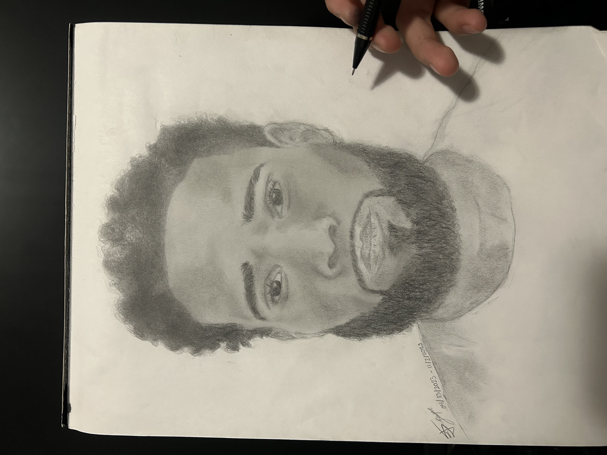

I was born in the province of Lipa City, Batangas, Philippines. I later moved to Chicago when I was 6 years old. Being an only child taught me independence and creativity. As I grew, I developed a passion for drawing, volleyball, and video games.
Volleyball
I began my volleyball journey in the sixth grade, continuing to play throughout my four years of high school as a middle blocker and hitter. During my sophomore year, I trained in the Philippines. I later joined Drive Volleyball Club and spent three years there.


Drawing
Drawing was my first passion. When I moved to America, lacking toys, I turned to paper and pencil, creating my own imaginative worlds. As a shy and introverted child, drawing became a way to express my feelings and explore the limitless possibilities of the human mind. Guided by my high school art teachers, I honed my skills, spending countless hours perfecting each piece. My perfectionist nature fueled my dedication to the craft.
Education
A fourth-year IT & Management undergraduate, passionate about Full-Stack Web Development, gained hands-on experience in Android app development through the ITMD 455 Intelligent Device Apps Android course, solidifying their interest in technology and design.
Modeling
Last year, I secured representation with Ford Models, gained industry experience, and transitioned to Option1 Models in 2024, landing my first booking with Foot Locker.